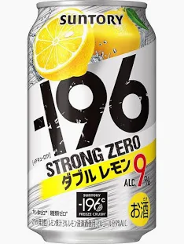

-196 STRONG ZERO
一口目でわかる。「あ、これ当たりだ」って。-196℃で閉じ込めた果実が、そのまま殴ってくる。9%のストロングなのに、ちゃんとうまい。糖類ゼロで、言い訳もいらない。疲れてるなら、とりあえずこれ。
一番人気のフレーバー。レモンの爽快な酸味と苦味が9%のストロングな飲みごたえと絶妙にマッチ。揚げ物や焼肉との相性抜群。
グレープフルーツのほろ苦さとジューシーな果汁感。甘さ控えめでスッキリ飲める、食事にも合う人気フレーバー。
巨峰の芳醇な香りと濃厚な甘みが楽しめるフレーバー。糖類ゼロなのにしっかり果実感。デザート代わりにも。
完熟梅の甘酸っぱい味わいが広がる和テイスト。梅干しや和食のおつまみとの相性が特に良い一本。
白桃の華やかな香りとみずみずしい甘さ。フルーティーな味わいながら糖類ゼロ、スッキリとした後味が特長。
完熟いちごの甘い香りと爽やかな酸味。春限定で登場する人気の季節フレーバー。見つけたら即買い推奨。
ストロングゼロを最高においしく楽しむためのコツをご紹介。ちょっとした工夫で味わいが格段にアップします。
冷蔵庫で4時間以上しっかり冷やすのが鉄則。最適温度は2〜4℃。缶をそのまま口に運べば、ストロングな炭酸と果実の爽快感が一気に広がります。暑い日の風呂上がりに最高。
大きめのジョッキに氷をぎっしり詰めて注ぐ。氷で少し薄まることでアルコールがまろやかになり、飲みやすさアップ。最後まで冷たいまま楽しめるのもポイント。レモンスライスを添えると見た目も味もグレードアップ。
冷凍レモンや冷凍ぶどうをグラスに入れて注ぐだけ。フルーツが氷の代わりになり、溶けても水っぽくならず果実感がアップ。SNS映えも抜群のおしゃれアレンジ。ダブル巨峰×冷凍ぶどうの組み合わせが特に人気。
9%が強いと感じる方におすすめ。ストロングゼロ1:炭酸水1で割れば、約4.5%の飲みやすいチューハイに。果実の風味はそのまま、長時間ゆっくり楽しみたいときに。強炭酸水を使うのがコツ。
糖類ゼロのキレのある味わいは、脂っこい料理と最高に合います。唐揚げ、餃子、焼肉、カレーなど味の濃い料理のお供に。ダブルレモンの酸味が口の中をリフレッシュしてくれるので、次の一口がどんどん進む。
2つのフレーバーを半分ずつ混ぜるオリジナルカクテル。おすすめはダブルレモン×ダブルグレフルの「Wシトラス」、ダブル巨峰×ダブル桃の「フルーツパーラー」。自分だけの最強の組み合わせを見つけてみて。
-196℃瞬間凍結製法による、まるごと果実のフレッシュで力強い香り。缶を開けた瞬間から広がる果実感。
糖類ゼロなのにしっかり果実のうまみ。9%のガツンとしたアルコール感と果汁感が共存する唯一無二の飲みごたえ。
キレのあるスッキリとした後味。糖類ゼロだから口に甘さが残らず、次の一口、次の料理へとテンポよく進める爽快さ。
液体窒素の沸点が-196℃。この超低温で果実をまるごと瞬間凍結し、パウダー状に粉砕してお酒に浸漬する独自製法。果実の香り・味わい成分を丸ごと閉じ込めることに成功しました。
「ストロングゼロ」の「ゼロ」は糖類ゼロのこと。甘味料を使わず、果実本来の味わいだけで満足感を実現。カロリーを気にする方にも嬉しい設計です。
ストロングゼロは9%と通常のチューハイ（3〜5%）より高め。500ml缶1本でビール中瓶約1.5本分のアルコール量。おいしく楽しむためにも、自分のペースで適量を心がけましょう。